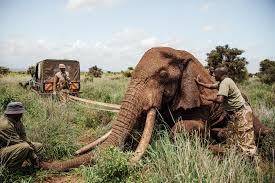

Unveiling my most favourite things to the least ones
Hey, pal here is a list of my favourite things
Take note that the most favourite ones are in an ordered list while the less favourite...your guess is good as mine.
Most favourite things
- Listening to music

- Watching soccer
- Wildlife conservation

- coding
- my dog(they say you need a friend,get a dog)
- coffee
Least favourite things
- Beer
- Whatsapp
- Green Tea